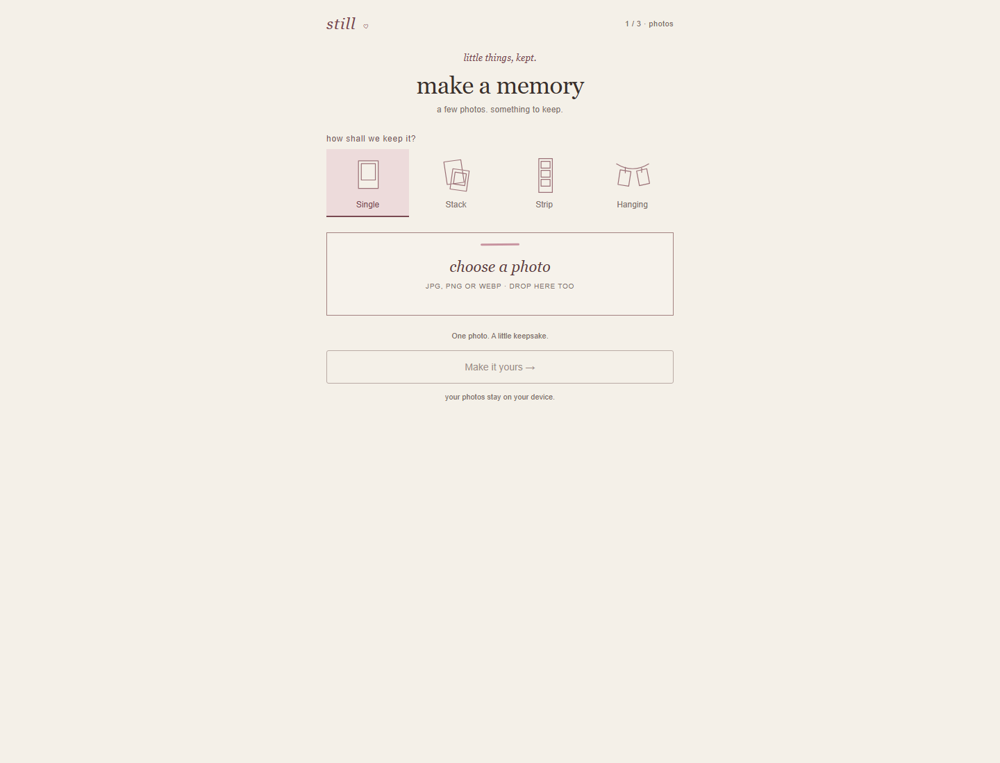
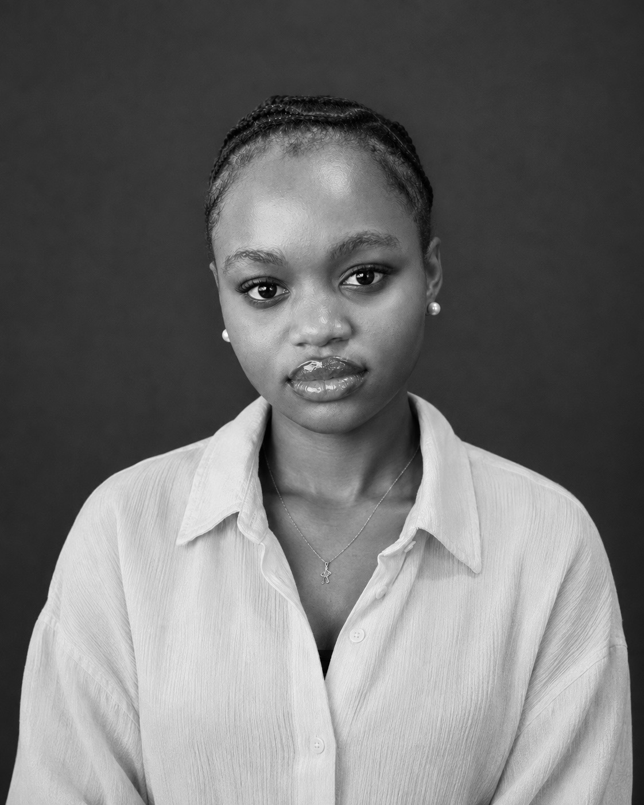
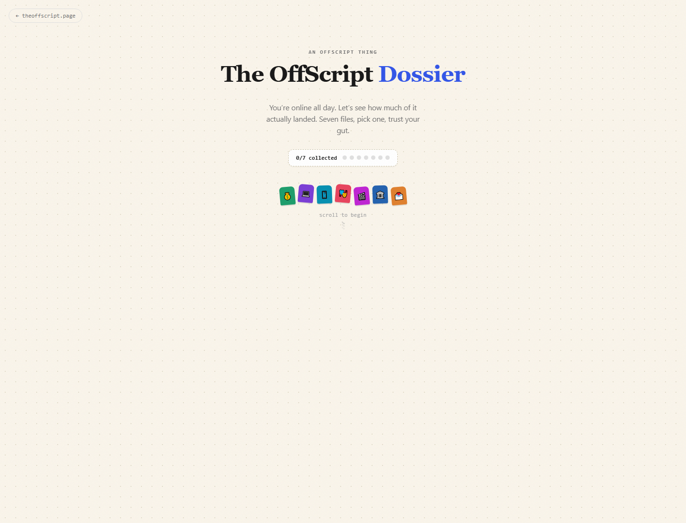

01
STILLcam
Turn a few photos into little memory objects.
Concept · Product · Design · Build Make a memory ↗
Lagos, Nigeria
I write, build media, and take good ideas all the way to something real.
01 About
I'm a founder, writer and product-minded operator interested in how information becomes clearer, more useful and more human.
By day, I work as a Founder's Associate across operations and executive priorities. Outside of work, I founded The OffScript, write about the ideas I can't leave alone, and make small internet products when I want something to exist.
"Make it easier to understand, use, or keep."

02 Writing
Personal essays, reported stories, and the occasional thought that became too loud to keep in my notes app.
tap a spine to read the full title
01 People who made my world a little bigger❤️
02 So, I started dating myself
03 Nigeria Doesn't Have an AI Problem. It Has an Ownership Problem.
04 Three companies are quietly deciding if our generation ever owns anything.
03 The flagship
Founded 2026 · Lagos, everywhere
Read less. Understand more.
The OffScript is an independent media project I founded for curious Nigerians who want the news straight and the context real. Every week, I shape the editorial direction, write and edit the stories, and turn the biggest conversations in politics, money, technology and culture into something people can actually use.
04 Selected work
A few ideas I took from thought to live URL.

Turn a few photos into little memory objects.
Concept · Product · Design · Build Make a memory ↗
A two-minute interactive check of what you actually know about the news.
Concept · Editorial · Product · Build Take the Check ↗Essays, reported stories
& notes worth keeping.
A home for the things I write, from personal essays to reported stories.
Creative direction · Editorial · Design · Build Enter ↗My little corner of the internet. You're already here.
Design · Build05 Work
I work close to founders and teams, bringing structure to busy work and momentum to useful ideas. The short version is here; the full detail lives in my CV.
HRA Systems · Remote
Supporting the founder across executive priorities and day-to-day operations, coordinating cross-functional projects, and building the company's internal knowledge base.
Proten International · Hybrid
Supported recruitment, onboarding and workforce administration across teams.
Bosom Private School · On-site
Planned lessons, tracked progress and kept students, parents and school management moving together.
06 Everywhere else